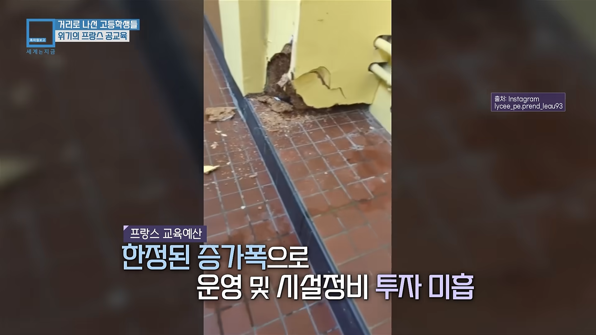
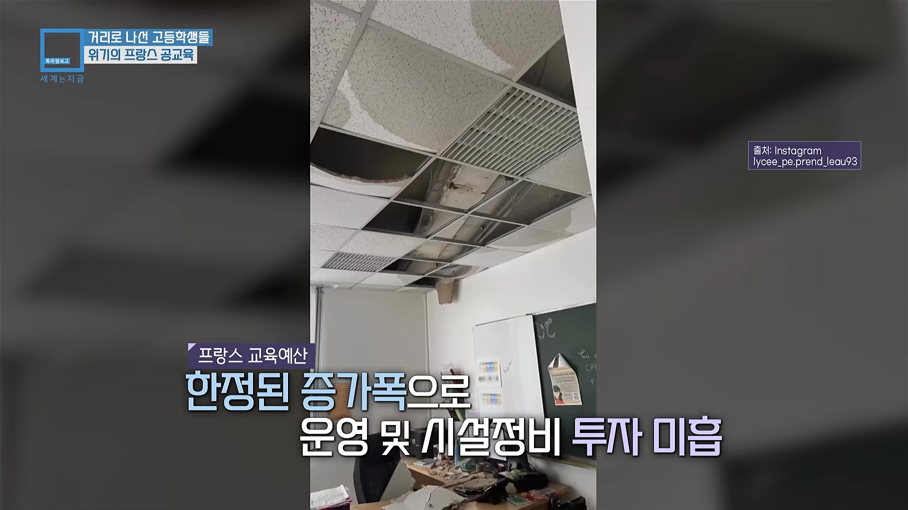
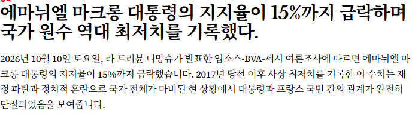

시설은 개박살나있고 선생은 수업하니 마니하는데 대입방식은 저런 상태



시설은 개박살나있고 선생은 수업하니 마니하는데 대입방식은 저런 상태

더내고 더받는 선택지의 말로를 보여주는..
더내고 더받는 그런게 아니라....
그냥 저나라의 서민과 국가의 평생의 약속임
부자는 부자고 서민은 서민이고 시위하지 말아요~
부자들은 부자티 좀 덜내고~
서민들은 열심히 일하고~ 이런 거
대신 세금으로 많이 내는만큼 연금과 복지로 노후 걱정하지 마라! 이거임
근데 나라 재정에 구멍이 생기니 약속 나몰라레후~ 하는건데
연금 타먹는 노인이나 곧 탈 중장년층이 무슨 악마도 아니고...
저기도 연금 말고는 아무 노후 준비가 안 되어 있으니 난리치는거임
다시 말하지만 창조적 파괴... 제3자 입장에서 숫자만 보면서 얘기하면
효율 좋은 거 누가 모르는 것도 아니고 진짜 별거 아닌데
당하는 당사자가 되면 돌아버리는거고 그게 노인이되어서 연금 관련이다?
그냥 죽으라는 건데 누가 하하호호 하면서 받아들이겠냐 이거지
ㄹㅇ 겉핧기로 노인네들이 어쩌고 하는 위에 병신들이 정독해야되는 글 나도 먼이웃 급식때 봤는데 유럽은 진짜 계급 분리되어서 사람들이 다 포기하고 올라갈 사다리가 없어서 분수에 맞게 사는 삶을 사는 거더만
그래서 넓게 보면 노블레스 오블리주 던지고
상위계층이 하위계층 버린다고 보면 됨
당장에 저기도 신탁이니 뭐니해서 상속세도 없는거나 마찬가지임 ㅋㅋㅋ
터질께 터졌다고봄. 세수 모질라서 국채 돌려 막기 하다 한계치 도달한거 라고 생각함.
우리나라는 똑똑하니.. 같은 꼴 안보길 기도할 뿐
딥스테잍.들 뭐하냐고 코로나 신버전 뿌리라고!!
유럽때놈 수준 ㅋ
유럽국가들 세율이 전반적으로 높을 건데도 저러네.
그만큼 연금 등으로 나가는거도 많고 의외로 고소득층이나 법인에게는 많이 거두지 못하는거도 크고.
저긴 다른거보다 연금이 문제임ㅋㅋㅋ 연금 지급할려고 낸 빚 이자때문에 저런데 세금을 못쓰는중
인터뷰하는 학생들이 뭔놈에 흑인밖에 엊ㅅ냐 ㅋㅋㅋ
핵심기술 로열티많아서 방석에 앉아 돈 벌고 명품으로 돈 쭉쭉 빨고 구 식민지 등에서 자원 얻고..
그렇게 빨아들인 돈들 어디다 써버린거냐..
루이비통 인공폭포
우리나라도 빚쟁이되고있던데
그러기엔 gdp대비 정부부채비율은 이번에 내려감
https://stock.mk.co.kr/news/view/1105181
6년만에 최저면 개쩌는거같은데?? 존나다행인데 몰랏음ㅋㅋ
저 천장은 왜 뚫렸겧냐고 니들이 다 망가드린거자나
존나불쌍하긴 하네
저거 markwrong 문제가 아닐텐데?
프랑스뿐만 아니라 유럽에 대한 환상이 개박살나기 시작하는거지
괜히 지금 유럽 좌파정권들이 몰락하면서 우파정권들이 들어서는게 아님
독일만해도 히틀러와 나치의 영향으로 평범한 우파성향을 가지고 있어도 극단적인 극우로 몰아버리는 사회였는데 그런 독일에서조차 이번에 좌파가 대패하고 우파가 승리함
이유는 별거 없음 유럽의 좌파정권들이 이전부터 약을 팔면서 우매한 대중들을 속이면서 길들여왔기 때문임
그리고 그 길들여진 민중들이 진짜 개돼지가 되면서 역으로 유럽 좌파들한테 독이되어버리고 있는 상황이고
사람들이 흔히 착각하는게 민주주의에서 복지는 최소한의 삶의 보장인데 이 복지를 오히려 혜택의 개념으로 착각해서 당연히 국가에서 무조건적으로 해줘야 하고 복지를 강화시켜야 된다고 착각함
거듭 말하지만 복지는 최소한의 삶의 보장일뿐이고 공동체에 여유가 있을때나 추가적으로 혜택을 제공해주는것이지 추가 복지는 의무가 아님
그리고 유럽의 좌파정권들은 자본주의 체제를 개혁하며 복지를 실현시키는 사회민주주의가 아니라 자본주의 체제에서 탈피하는 민주사회주의의 노선으로 타락해버렸다는게 포인트임
이게 뭔 소리냐?
무상교육, 무상급식, 무상 어쩌고, 사회적 복지, 지원금 어쩌고
취지는 좋음 근데 누구돈으로 할거고 어떻게 자금을 마련할건데?
겉으로는 도덕윤리적인 취지, 국민들에게 혜택을 제공하겠다 하면서 그럴싸한 의도로 내세우지만
실상은 국민들의 세금을 과남용하겠다는거고 누군가를 더 갈취하겠다는 소리고 이거를 저런 도덕적인 명분으로 속여서 표팔이를 해왔던거임
즉슨 니 돈을 더 걷어서 저런 복지세금으로 더 쓰겠다는 말인데 이 복지들을 너에게 무상제공하겠다는 식으로 거짓말한다는거임
심지어 본인은 해당 안되면 일방적으로 뜯기는거고, 해당되는 인간은 일방적으로 꿀통빠는거지
근데 가장큰 문제는 저게 지속가능한 복지체계가 될 수 없다는 점임 돈찍어내는 미국조차도 불가능한거라 어느정도 타협과 조정이 필요한 사안들인데 무지성으로 사회복지를 과남용하면서 남발하다 몰락하는게 현 유럽의 트랜드임
마크롱도 그렇도 대다수의 유럽 좌파정권들은 저런식의 사회복지주의 모델로 약팔다가 내실이 다 무너지면서 이도저도 못하고 있는 상황인거
연금개혁부터 시작해서 기존 과남용되고 있는 복지정책들 철폐한다?
이미 개돼지가 되어버린 좌성향 프랑스 민중이 가만있을까?
그렇다고 기존 복지정책들을 그대로 고수한다?
재정적 문제는 어떻게 할건데? 저 사회주의적 복지체재들은 지속불가능한 체제고 끝물에 있어서 프랑스에 대금광 산맥이 오질라게 나오지 않는 이상 그냥 대안이 없음
계속해서 프랑스 좌파정권에서 폭탄돌리기 하면서 표팔이 하다가 터질때쯤 된거임
더 이상 저런 체재를 유지못하거든 결국은 기존의 사회복지적 체재들을 재정비해야하는데
꿀통빨고있던 프랑스 개돼지 민중이 저걸 내놓겠냐고ㅋㅋ
정상적인 민중들이라면 지속불가능한 체제와 과남용들을 경계하고 지속가능하고 효율성 있는 복지체계를 해야 한다고 주장하겠지만 이미 개돼지가 되어버린 프랑스 민중들 수준에선 폭도가 되는거임
당장 저 고삐리 애새끼들부터 폭도로 돌변했잖아ㅋㅋㅋ
돈이 없는데 어떻게 복지를 제공하냐고ㅋㅋㅋ 그렇다고 돈 갈취하겠습니다 하면 또 폭동일으킬거잖아
잼미니야 이거 요약해줘
니가 처먹은 무상급식 돈이나 내고 씨부려
왜케 화가나있냐?
단어에 집착하지 말고 맥락을 봐라
무상급식이 잘못됐다는게 아니라 본인 체급과 실정에 맞는 복지적 혜택이 중요하다는거지
예시로 든 복지혜택 단어가지고 왜 과몰입 하는거임?
프랑스의 조세부담률은 GDP 대비 약 43.5% 수준이고 한국 조세부담률: GDP 대비 약 17.6%로 OECD 평균 대비 낮은편임
그리고 난 이미 내가 쳐먹은 무상급식의 배 이상을 세금을 내고있으니 니나 돈 착착 잘내셈
너 나랑 생각하는게 엄청 비슷하다. 나도 요즘 깊게생각하는부분임.
그래서 복지는 진짜 지금보다 줄이고 필요한 부분에 돈을 더 쏟고(기술개발) 그래야된다고보는데 사람들이 도파민에 쩔어서 복지 좋아 부자는 세금 더내 이런것만보고있으니 쫌 답답했거든.
사실 부자라는 기준을 나라입장에서 보면 그냥 빈곤층 제외 모두로 보고있는거같은데 왜 그생각을 안할까? 사람들은ㅜㅜ
결국 모든 복지는 내 주머니에서 나가는거고 실질적으로 혜택은 많이 못보는건데 다들 환상에 젖어 있는듯
표팔이 포퓰리즘 정책 남발로 쓸데없는 복지에 과남용되는게 진짜 엄청난 문제임
그리고 무엇보다 그 복지에 드는 비용이 절대 공짜가 아닌데 사람들은 다 공짜고 마르지않는 샘물이라 생각하고 있음
정작 필요한곳에 가야할 돈들이 의미없는 곳에 낭비되는거고 그 돈은 결국 국가의 국민들이 내는 세금이자 나라를 운영하기 위한 자금임
절대 공짜가 아니고 무상도 아님
나라의 돈은 국민의 돈이고, 그 돈을 쓰겠다는건데 이게 어떻게 공짜야ㅋㅋ 내 돈가지고 생색내는거지
지금 한국이 다른 국가들한테 듣는 소리가 아시아의 프랑스 소리를 듣고 있음
나는 사람의 삶은 더 나아져야 한다고 믿지만 그것도 자신의 형편에 맞게 행동해야지
우리는 이제 더 이상 예전처럼 다른 국가들이 쌓아온 길을 보며 쫒아가는 포지션이 아님 이제는 스스로 앞길을 내닫으면서 길을 찾아야 하는 위치가 되었는데
언제까지 유럽의 환상에 젖어있을지 모르겠음
유럽은 마약중독자 마냥 자신들의 미래를 팔고 제 살을 갉아먹으면서 환상에 도취되어있던건데 비유럽 국가들은 이 실체와 이면을 제대로 보지 못하고 오직 유럽에서 보이는 쾌락만 보고 흉내내고자 함
북유럽 국가들은 대부분이 체급대비 자원이 넘치는 산유국이라서 엄청난 복지혜택을 때려부어도 그게 유지가 가능했던거고 서유럽 선진국들은 전통적인 제국열강 국가들로 금융, 자본, 인프라 등 모든 면에서 제알 최첨단을 가졌기에 한동안 그게 가능했던거임 문제는 계속 안주하면서 제 살 갉아먹고 있다가 신흥세력으로 올라온 동북아에게 밀려나면서 몰락의 길을 걷게 된거고
우리가 지금 유럽을 밀어내고 몰락시키고 있는 신흥 세력중 하나인데 그 유럽의 전철을 따라가려고 하는지 모르겠음
곳간이 풍족한 유럽도 결국 못버티고 ㅈㅈ치고 있는게 과도한 사회복지체제인데 한국이 이걸 따라할 여유도 없고 이유도 없음
우린 여기서 최대한 유럽을 완전히 재껴서 인류 마지막 패권 경쟁의 끝인 4차산업의 승전국으로 영원한 서열을 매겨야함
좋은 의견이고 팩트라고 생각함.
식민지에서 자금을 충당하던 것도 다 날아가고
개돼지들은 그 돈으로 누리던 복지에 길들여져서 더 일 안 하고 주 4일제를 외치고 있고…
세수는 더더욱 안 걷히니 땜빵하려고 국채를 발행했는데, 상황은 더 나빠지니 또 국채를 발행하고..
그렇게 돌려막기하 다가 이제는 막을 수 없는 수준까지 온 거라고 봄.
사실상 프랑스는 몰락의 길만 남았지
제대로 보유하고 경쟁력있는 미래 고부가 가치 산업들은 전무하고 그렇다고 제조업이 뛰어난것도 아님 그런 와중에 복지세로는 계속 천문학적으로 손실이나며 빵꾸가 나니...
근데 이거는 어떻게든 극약처방을 내려서 체질개선을 한 후에 지금이라도 다시 따라가볼 체력은 아직 남아있고 충분히 기술력도 남아있음
문제는 제조업 기반이 거의 박살나다시피하고 경쟁력이 없어서 이걸 뒷받침할 체력이 없음 지금 경제적으로 흔들리고 있기도 하고 이걸 어찌저찌 해결한다 해도
해결할 수 없는 가장 큰 문제가 이민자로 받았던 무슬림들이 해처리에서 저글링 찍듯이 마구 싸재끼니 인구비율에서 무슬림의 점유율이 높아지고 있음
이미 프랑스 국민인 이상 쓰레기같은 무슬림 놈들을 쳐낼수도 없음
이거 쳐내려면 히틀러 빙의해서 광기의 파시즘을 통해 인종청소 해야하는데ㅋㅋ 불가능하지 서서히 죽어갈거임 프랑스는
무섭다 무서워
영상40도에서 영하5?? 시발 장나ㅡ난하너
교육을 개박살 내는 것만큼 나라 미래 말아먹는 방법이 얼마 없는데 뭔 생각일까
마카롱쉑 대통령 ㅈㄴ 오래하는 느낌이네 ㅋㅋㅋ
영하5도는 씨발
신자유주의자 마크롱을 좆뽄다고 또 뽑아줬냐?
ㅇㅇ 그래서 다시 창조적 파괴로 돌아가는데....
너도 알고 나도 알고 다 알지 ㅋㅋㅋㅋ
솔직히 개혁 당해야하는 사람들도 알걸?
근데 그 누가 아! 좋습니다! 나라를 위해
부자들은 감세 혜택 받고 그렇지만 저는 수십년간 부은 연금 개혁하고 제 노후를 버리겠습니다!
저는 뭐 세끼 먹을 거 두끼 먹고, 고기 먹을 거 스팸 먹고,
이것도 안 되면 저 구석에서 쓰레기통에 버려진 음식물이나 먹으면서 버티다
고독사나 변사체로 발견되죠! 이러겠냐 이거지 ㅋ
부자들과 기업들은 좀만 불이익 받으면 다 튀는데
저는 뭐 튈 능력이 안 되니 죽어야죠 ㅎㅎㅎㅎ 이러겠냐 이거지 ㅋㅋ
그리고 연금이나 복지 같은 건 한번 건들면
다음 세대가 나라를 안 믿어 버린다는 문제도 있어서
어차피 돈 존나 뜯기고 필요하면 나몰라라 하고 버릴텐데 왜 내나요? 에 대한 답도 내야하고 ㅋㅋ